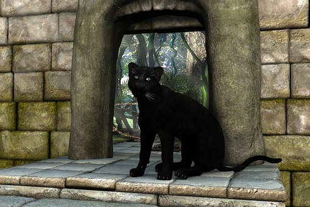
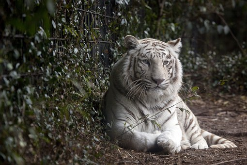

FELINOS:

HISTORIA DE LA PANTERA NEGRA
En Sudamérica se denomina pantera al jaguar (Panthera onca); en Norteamérica,
la palabra pantera es comúnmente usada para denominar al pum (género Puma); y,
para el resto del mundo, en especial en África y Asia, el vocablo es usado para denominar al leopardo
(Panthera pardus).
hábitat de las panteras. De la denominada pantera existen dos especies: la pantera negra y la pantera onca.
La primera habita en África y algunas regiones de Asia, mientras que la segunda tiene su hábitat en las regiones de
Sur América y América Central.Las panteras prefieren cazar animales grandes como venados, ganado, tapires, carpinchos y pecaríes.
Aunque si la naturaleza dispone,no se negarán a alimentarse de ranas, aves, peces, ratones, algunos insectos y animales domésticos

HISTORIA DEL GATO
La historia del gato se basa sobre todo en la percepción que el hombre tiene del pequeño felino.
Se cree que la domesticación del gato comenzó entre el 7500 a. C. y el 7000 a. C.
La visión que el hombre tiene del gato difiere totalmente de una época a otra, siendo desde la antigüedad, cuando lo veneraban,
hasta la Edad media,cuando los quemaban en las hogueras, pensando que era un animal diabólico.
Los antiguos egipcios usaban para llamar al gato la onomatopeya «miu», cuya transcripción es miw en masculino y
miwt para el femenino (el español usa también este tipo de onomatopeya, que se encuentra en el verbo maullar).

HISTORIA DEL TIGRE BLANCO
Los tigres blancos son ejemplares de tigre (Panthera tigris) con una condición genética que casi elimina
el pigmento de su coloración normalmente anaranjada, aunque las rayas negras no se ven afectadas.
Esto ocurre cuando un tigre hereda dos copias del gen recesivo para la coloración pálida: nariz rosa, ojos color azul,
y piel de color blanca crema con rayas negras, grises o de color café claro.
Los tigres blancos generalmente son de la subespecie del tigre de Bengala (Panthera tigris tigris) o del tigre siberiano
(Panthera tigris altaica),[cita requerida] aunque hay datos históricos de aparición en varias subespecies más.
Actualmente, varios cientos de tigres blancos están en cautiverio alrededor del mundo, con 100 de ellos en India, y su cantidad
está en aumento. La población actual incluye a tigres de Bengala puros e híbridos de Bengala y siberiano,
pero es incierto si el gen recesivo del blanco vino sólo de los de Bengalas o de los siberianos.